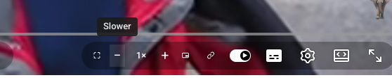
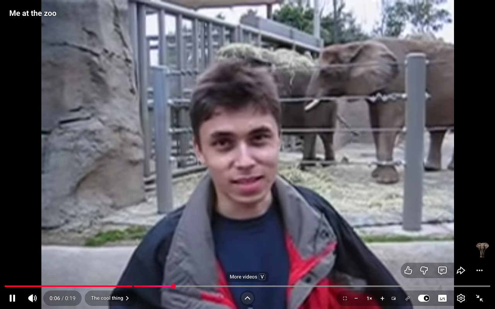
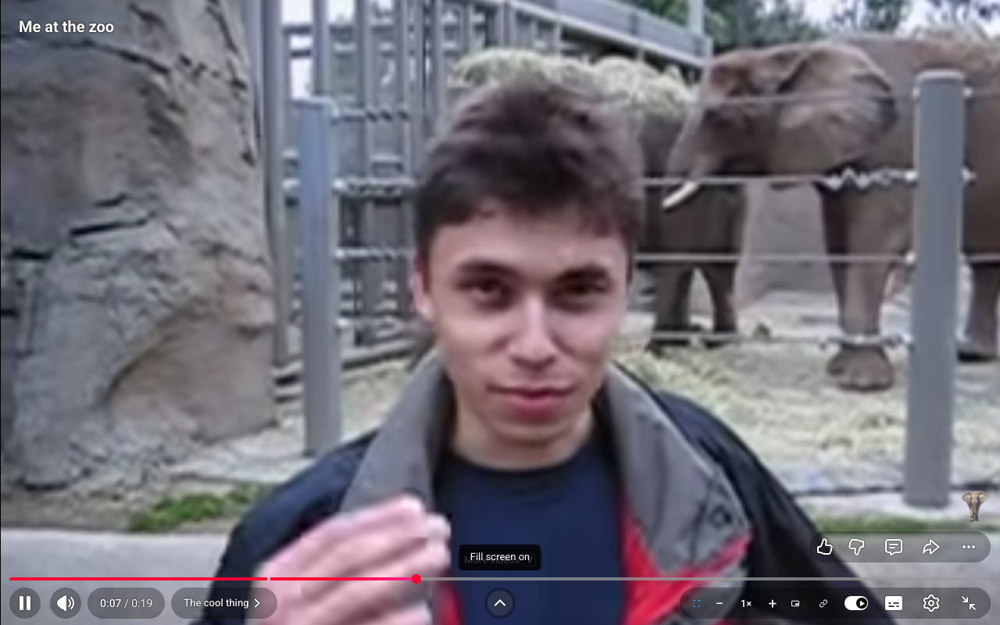
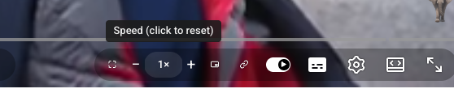

Fill the screen to kill black bars. Step playback speed past 2x. Pop picture in picture. Copy a clean link. All of it one click away, right where your cursor already is.

Old videos, cinema crops, phone uploads: they all leave black bars. One click computes the exact zoom from the player and video geometry and crops them away. Any aspect ratio, any mode, and it re-fits itself on resize, fullscreen and video changes. Try it:


fill screen: off
A − 1× + stepper on the bar itself. Quarter steps from 0.25x all the way to 3x, while YouTube's own menu gives up at 2x. Click the number and you snap back to 1x. The label stays honest even if you change speed from YouTube's menu.
everything past 2× is extension territory
One button. No right-click, right-click again ritual. Toggles in and out from any mode.
Puts youtu.be/<id> on your clipboard. No playlist junk, no tracking params, no share sheet detour.
Buttons scale up in fullscreen big mode, glow blue when active, and tooltips sit exactly above what you are pointing at.
SPA navigation, layout experiments, video swaps: the controls re-inject and re-anchor themselves. Content script only, no background process, no data collected.

Grab yt-player-controls.zip and unzip it somewhere it can live permanently.
Go to chrome://extensions and flip on Developer mode in the top right corner.
Click Load unpacked and select the unzipped folder.
Open any YouTube video. The new controls are on the right side of the player bar, next to the settings gear.